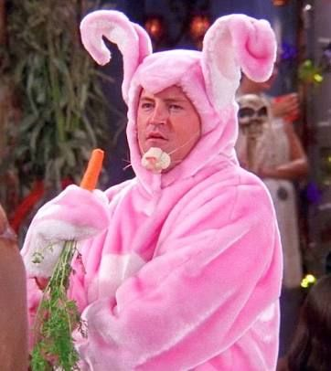

Chandler
Full Name
- Chandler Muriel Bing
Day of Birth
- 1968 (Day and month unknown)
Gender
- Male
Spouses
- Monica Geller (2001)
Main Job
- Statistical analyst and data reconfigurator
Portrayed by
- Matthew Perry
The intelligent jokester
Chandler's complex personality, marked by a unique blend of humor, wit and vulnerability, contributes to his status
as a beloved and memorable character in television history.
Physically, Chandler is of average height, with a lean and somewhat lanky build. He has a slightly rounded face,
accented by a prominent nose and a charming smile that often hides his deeper emotions. His hair, typically styled in a
slightly messy manner, is a light brown color, complementing his hazel eyes that shimmer with intelligence and mischief.
Chandler's fashion sense is best described as casual and comfortable, often seen in button-down shirts, loose-fitting
sweaters, and khaki pants. He embraces a somewhat nerdy aesthetic, with an affinity for wearing vintage and novelty T-shirts
that reflect his quirky sense of humor.
But it is Chandler's personality that truly makes him stand out. He possesses an uncanny ability to defuse tense situations
with his quick wit and sarcastic remarks, often using humor as a defense mechanism. Chandler is notorious for his razor-sharp,
self-deprecating sense of humor, and his sarcastic one-liners have become iconic in the series.
Despite his constant jokes, Chandler has a deep-rooted vulnerability that stems from a troubled childhood. His parents'
dysfunctional relationship and their subsequent divorce left a lasting impact on him, leading to his defense mechanism of
using humor as a shield. This vulnerability often surfaces in moments of self-doubt and fear of intimacy, making him relatable
and endearing to audiences.

Chandler is also known for his keen observational skills and intelligence, often making astute observations about the people
and situations around him. His job as a data processor may seem mundane, but his intelligence shines through his quick thinking
and problem-solving abilities.
Throughout the series, Chandler experiences significant character growth. He transitions from a commitment-phobic, jaded
individual to a more mature, loving partner and friend. His relationship with Monica Geller, his eventual wife, is a testament
to his emotional growth and capacity for love and loyalty.
Chandler's friendships with the rest of the gang are a cornerstone of the show. He shares a special bond with his roommate
Joey Tribbiani, and their bromance provides many memorable comedic moments. Chandler's loyalty and support are evident in his
relationships with Rachel, Ross, Phoebe, and especially Monica, whom he considers his soulmate.
In summary, Chandler Bing is a multifaceted character whose sharp wit, vulnerability, and personal growth make him one of the
most beloved and relatable characters in television history. His humor, intelligence, and enduring friendships with the rest
of the friends' group solidify his place as an iconic figure in the world of sitcoms.